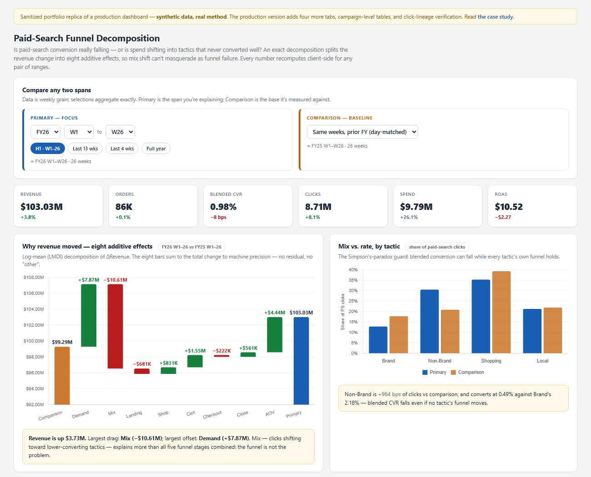

The situation
Leadership needed exec-ready views across marketing, merchandising, and product — and the realistic paths all had problems. Enterprise BI meant licenses, a platform queue, and charts that never quite matched the deck. Notebooks meant nothing a stakeholder could open on their phone at 7 a.m. And every one of these views ends up screenshotted into a deck or a Slack thread, where formatting is credibility: a sloppy table reads as a wrong number even when it's right.
So the suite is built on a deliberately unfashionable pattern: each dashboard is a Python generator that emits one self-contained HTML file — data embedded, all interactivity client-side. Publishing is copying a file. Refreshing is a scheduled job. The hub that indexes them shows a staleness dot per tile, and the whole thing runs without a single piece of BI infrastructure.
What I did
Beyond the dashboards themselves, two pieces of system work made the suite trustworthy. First, a written design standard — table conventions, value-and-delta columns always adjacent, rate changes in basis points colored by direction-of-good, one blue for the focus period and one orange for the baseline, everywhere. Second, a footing rule: money rows must reconcile to the attribution source of truth to the dollar, because people add these numbers up across dashboards, and a bridge that reads lower than the report next to it is dead on arrival.
The flagship is a paid-search funnel decomposition built to answer one recurring anxiety — "conversion is falling" — with an exact answer instead of a debate. It splits any revenue change into eight additive effects that sum to the total to machine precision, which means mix shift (spend moving into tactics that never converted well) can't masquerade as a broken funnel. A sanitized replica is below — it's the real interface pattern with synthetic data.

The turn
The week that proved the suite's worth: brand paid-search clicks dropped by a quarter, and the room's reflex was "we lost position to a competitor — increase bids." The dashboard's auction panel told a different story: ~96% impression share with 0% lost to budget, in both years. The decline wasn't buyable. Eligible searches were down and click-through was eroding — demand and SERP behavior, not auction position. A six-figure "allocation loss" was reclassified from a budget lever to a demand signal, and the bid increase never happened.
The suite also polices itself. When a weekly view once combined a complete seven-day total with a six-day slice from a stale cache, the symptom — a funnel rate dropping ~1,000 basis points in one week across all four tactics at once — was diagnosable precisely because real click-quality shifts are tactic-specific. That tell is now written doctrine. And when a tracking tag died and made an add-to-cart rate read 726%, the fix wasn't patching the bad weeks — it was a generic impossibility gate (more adders than viewers) that blanks the affected metrics, shades the band, and self-heals when the backfill lands.
What happened after
The hub became the operating cadence: stakeholders open dashboards instead of requesting pulls, and dashboards get retired when a better cut supersedes them — a curated portfolio, not an accretion. The Wednesday leadership deck runs as one command: it detects the fiscal week, runs eleven modules against the mart, and screenshots each view into deck-ready images — so a mid-week correction is a re-run, not a rebuild. And the clearest adoption signal: a retail leader's verbatim question from a business review got its own permanently maintained tab.
Technical notes, for the people who will ask
Decomposition. Log-mean Divisia (LMDI-I) over the identity Revenue = Σtactic Clicks · share · (Sess/Click) · (Shop/Sess) · (Cart/Shop) · (CO/Cart) · (Orders/CO) · AOV — eight effects, additive, zero residual. The engine is a generic N-factor chain with unit tests, reused across three dashboards; the Python and client-side JS implementations are cross-checked on every generation.
Verified click lineage. The production bridge anchors paid clicks to sessions via click-ID matching (~85–90% coverage), so "clicks that never produced a measured visit" is a real, sized bar instead of a shrug.
A method rejected on sign. An earlier spend-mix valuation (Laspeyres-style, crediting added spend at last year's return) flipped the sign of a reallocation effect — it valued new dollars at a rate measured on almost no spend. Replaced with an exact identity valuing dollars at their realized return.
Delivery. Single-file HTML with embedded data caches; daily-grain data so arbitrary ranges aggregate exactly; per-table CSV export that opens clean in Excel; scheduled refresh via ~36 OS-level jobs; the deck renderer drives headless Chrome for pixel-identical screenshots.
The other two case studies: the semantic layer underneath all of this and the organic-decline decomposition — or back to all work.